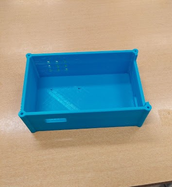

About the Project
ParkEase is a device designed to assist drivers during the parking process. It uses a modular sensor system to improve a driver's spatial awareness and visibility by communicating the distances to objects surrounding the vehicle. ParkEase was developed by a team of five as part of the requirements for ENEL 400 at the University of Calgary.
ParkEase features an LCD screen that displays a graphical user interface (GUI) with distance information for objects behind the vehicle. An ultrasonic sensor is mounted to the rear of the vehicle using magnets to measure the distance to nearby objects. A Raspberry Pi 4 serves as the main computer, processing the sensor data and running the GUI. Circuit protection components, including voltage regulators, a fuse, and a cooling fan, are used to help protect the hardware.
My primary responsibility was designing the hardware enclosure using Fusion 360 and developing the attachment mechanism for mounting the enclosure securely to the vehicle.
Enclosure

Prototype

System Block Diagram

Ultrasonic Sensor